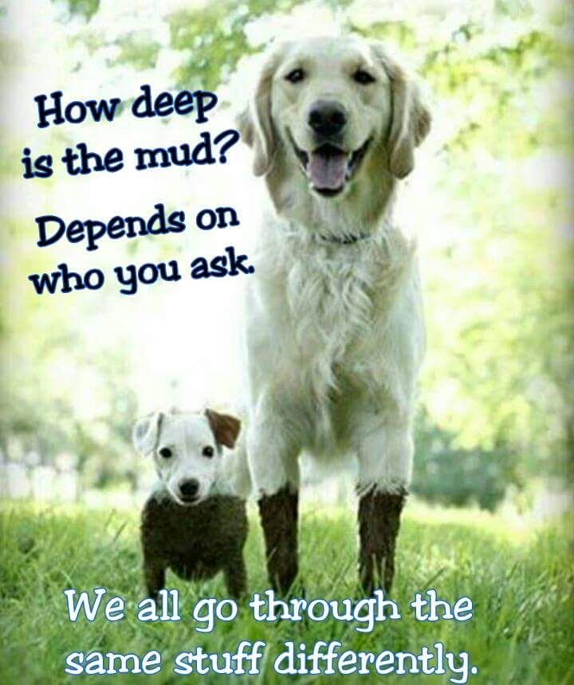

¿Quiénes Somos?
Somos un grupo de estudiantes de la facultad de ciencias físicas y matemáticas de la universidad de Chile a los cuales les une la preocupación por el impacto ambiental y el bienestar animal, tomamos a los microbasurales como problemática principal ya que entendemos que degradan el ambiente en el que convivimos diariamente, convirtiéndolo en un espacio inseguro no solo para las familias, ya que gran parte de los afectados son los perros y gatos callejeros.
Teniendo esto en mente nos propusimos transformar los microbasurales en espacios agradables para la comunidad y los animales, esto por medio de la construcción y del acondicionamiento de estos espacios para que sean adecuados para albergar a perros y gatos callejeros transformándolos en espacios amigables para el medio ambiente y el bienestar animal.
Hacemos esto ya que creemos que la salud animal junto con el bienestar de la comunidad están interconectados, ya que un entorno limpio es un derecho para todos los seres vivos.
Nuestra Inspiración
Nuestra inspiración y lema se reflejan perfectamente en la imagen que nos guía: "How deep is the mud? Depends on who you ask. We all go through the same stuff differently." Para nosotros, esta metáfora representa la realidad de los animales callejeros frente a la crisis de los microbasurales. Mientras que para una persona un cúmulo de basura puede ser solo una molestia visual o un problema pasajero, para un perro o un gato abandonado ese mismo entorno es un obstáculo crítico que pone en riesgo su supervivencia. Es por esto que los refugios y espacios acondicionados que planteamos en nuestro proyecto buscan transformarse en un hogar temporal que les devuelva la esperanza; un lugar seguro, digno y lleno de cuidado donde puedan sanar mientras trabajamos activamente en encontrarles un hogar definitivo.
